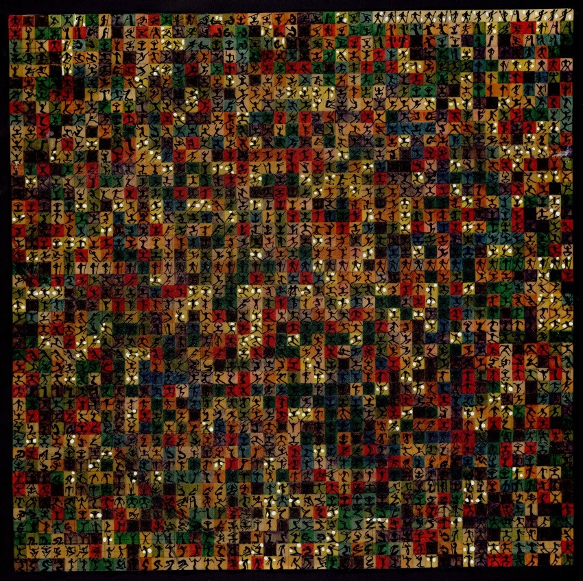

Немного обо мне
Привет! Это моя личная страница, где я делюсь тем, что мне интересно, рассказываю о своих увлечениях и сохраняю небольшие истории.
Мои интересы →
Мои интересы
Здесь я собрал несколько увлечений, которые занимают особое место в моей жизни. Нажми на интересующую карточку, чтобы узнать о ней подробнее.
01 Спидкубинг Почти 9 лет собираю кубик Рубика и другие головоломки на скорость. Подробнее + Свернуть −
Спидкубинг — одно из моих главных увлечений. Обычный кубик 3×3 я собираю в среднем примерно за 15 секунд.
Помимо него, по возможности тренирую ещё девять дисциплин. Также участвую в местных соревнованиях и помогаю в их организации в роли скрамблёра.
02 Музыка и барабаны Русский рок, любимые группы и первые шаги в игре на барабанах. Подробнее + Свернуть −
Уже около пяти-шести лет я активно увлекаюсь русским роком. Мне интересно не только слушать музыку, но и изучать дискографии, историю групп, альбомов и отдельных песен.
Среди любимых исполнителей — Кино, Наутилус Помпилиус, Би-2, Агата Кристи, Земфира, Сплин и другие.
Около полугода назад у меня появилась барабанная установка. Теперь я постепенно учусь самостоятельно исполнять любимые композиции.
03 Игры и киберспорт Standoff 2, тысячи часов практики и интерес к профессиональной сцене. Подробнее + Свернуть −
Когда-то я очень активно играл в Standoff 2 и провёл в игре более 2000 часов.
За это время я хорошо познакомился с игрой, её историей и профессиональной сценой. Сейчас играю значительно реже, но продолжаю следить за обновлениями и иногда с удовольствием возвращаюсь.
04 Пенспиннинг Трюки с ручкой, тренировки и коллекция пенмодов. Подробнее + Свернуть −
Пенспиннингом я увлекаюсь около пяти лет. За это время освоил немало базовых трюков и связок.
Отдельный интерес для меня представляют пенмоды — специальные ручки для вращения. Сейчас в моей коллекции 11 модов.
В последнее время тренируюсь не так часто, но иногда с удовольствием возвращаюсь к этому занятию.
Истории
Небольшие заметки, воспоминания и интересные события из моей жизни.
Секундомер для спидкубинга
Удерживайте пробел около 0,5 секунды — цифры станут зелёными. Отпустите — старт. Повторное нажатие — стоп.
История сборок
| № | Время | AO5 | AO12 | Рекорд |
|---|---|---|---|---|
| Пока пусто — сделайте первую сборку! | ||||